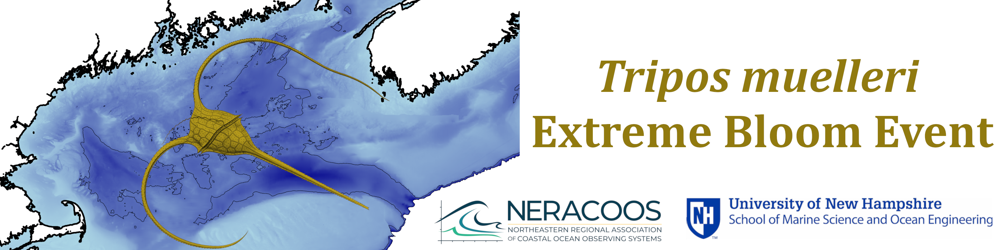
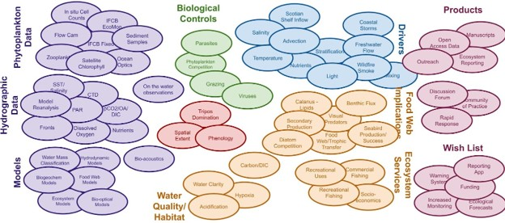
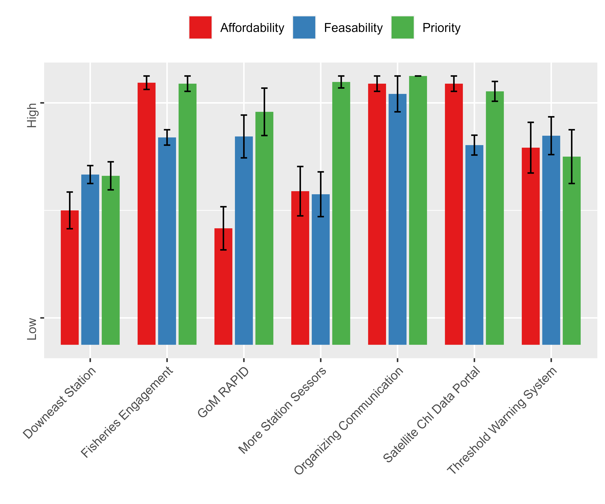

Workshop Report

The 2023 Bloom, Collaborative Monitoring Response, and timeline to the Workshop
Observation of the highly unusual bloom and initiation of email chains
In the late spring and early summer of 2023 a number of email threads were being circulated that remarked on the brown water and unusual algal bloom. The most prominent of these threads was started by Jane Tucker from the Plum Island Ecological Research Project. In the threads participants shared observations, asked questions, offered insights, and included participants who might be able to provide more observational knowledge or expertise.
Activation of the Integrated Sentinel Monitoring Network (ISMN)
The ISMN was formed by NERACOOS and NROC in 2012 with the recognition that the sustainability of the Northeast Region is threatened by ecosystem and climate change, and in order to be resilient and adapt to those changes stakeholders and decision makers need to be aware of them. A strategy for understanding and communicating those changes is the ISMN which is designed to leverage ongoing, disconnected, monitoring efforts to detect ecosystem changes and form collaborations for analysis. Specifically, these are the primary tasks of the ISMN 1) find and fill gaps in present ecosystem observing activities, 2) facilitate integration and communication among monitoring efforts, 3) make findings more impactful through data sharing. In June and July of 2023 the series of Tripos Bloom email threads had reached a peak of activity and it was realized that this unusual bloom event warranted support from the ISMN to help coordinate communication to external communities, as well as to foster collaboration amongst groups monitoring different components of the bloom.
UNH Press Release and Media Coverage
Shortly after the ISMN activation, a draft article was prepared in collaboration with UNH scientists to communicate with stakeholders and the public. It was designed to inform them that an unusual bloom event was happening, and that there could be impacts to the marine system that warranted attention. The UNH media relations department learned of those efforts and offered to take the lead on a press release. The media professionals took the draft materials gathered by NERACOOS staff, formatted them into a story, and followed up with collaborators to verify facts and quotes. These efforts, the activation of ISMN, communication with the email collaborators, drafting of a popular article, and UNH media relations takeover of communications occurred in the first week of August. At the time there was great concern that a hypoxic zone would form and our ability to monitor for that was limited. The hope was that a popular article could help instigate the release of funds for rapid monitoring. Working with the communications professions from multiple institutions, the UNH press release went out on August 23rd, 2023. It was then followed by 14 or more popular media pieces covering the Tripos bloom.
End of the Tripos Bloom
By August it was observed that the Tripos bloom had moved offshore in the Western Gulf of Maine and cell counts had started declining. Nevertheless, there were concerns that if nothing was grazing the Tripos bloom and abundances were reduced in the upper water column then it was likely that it was sinking to the bottom where bacteria could consume it and reduce dissolved oxygen (DO). Although lower than usual DO levels were detected in Wilkinson Basin and in Massachusetts Bay there was no indication of a large hypoxic zone developing. Water column mixing due to fall storms and advection of dead Tripos away from the region may have helped prevent widespread hypoxia but the ultimate fate of the bloom was undetermined.
Collaboration with University of New Hampshire (UNH)
Through the activation of ISMN a collaboration formed with UNH scientists who were instrumental in monitoring and reporting on the bloom, Drs. Liz Harzey, Chris Hunt, Doug Vandemark, and Kai Ziervogel. It was agreed that UNH and NERACOOS would collaboratively plan a joint two-day event; a UNH Seminar event, followed by an ISMN supported collaborative workshop.
Seminar Presentations: Tripos in the Gulf of Maine
On January 17th 2024, the seminar was held in the lecture hall at the Chase Ocean Engineering Laboratory. It was held in person and online via Zoom. A recording of the seminar can be found at the UNH SMSOE website UNH SMSOE Seminar Series. There were approximately 40 to 50 in person attendees and over 90 online with anecdotal stories of multiple people watching a single online feed (e.g. Dr. Kim Hyde NEFSC).
Recent and ongoing changes in the oceanography of the Gulf of Maine
Presented by Dr. David Townsend of the University of Maine
In his presentation at the University of Maine School of Marine Sciences Seminar, Dr. David Townsend provided a nuanced exploration of the Gulf of Maine’s marine ecosystem, focusing on the emergence of unusual plankton blooms against a backdrop of changing oceanographic conditions. Townsend revisited the significance of spring bloom initially documented by Henry Bigelow in the 20th century. They are primarily dominated by diatoms, provide the foundation of productivity for the marine food web and are notable for dissipating as rapidly as they appear. In modern times, perhaps with the aid of greater monitoring, there have been observed a number of episodes of monospecific blooms of diverse phytoplankton species such as Tripos muelleri, Emiliania huxleyii, Alexandrium catenella, Phaeocystis pouchetii, Prorocentrum, and Myrionecta rubra.
Each of those blooms was further discussed in the context of specific environmental conditions that may favor their emergence and proliferation, such as nutrient concentrations, water temperature, and interactions with other species. For instance, Townsend elaborated on the 1989 coccolithophore bloom that became visible via satellite imagery and provided a unique insight into their spatial and temporal occurrence. Analysis later suggested that the species E. huxleyii was restricted to low nutrient waters, which would be found away from bottom sediments and river outflows.
Dr. Townsend then delved into the changing oceanographic conditions of the Gulf of Maine, particularly emphasizing the warming trends and alterations in water mass distributions. Townsend outlined how after 2008 the Gulf Stream shifted north to a position close to the Grand Banks which has had implications for the influx of water masses into the Gulf of Maine. This shift has led to reduced inflows of cold, nutrient-rich Labrador Slope Water and an increase in warmer, saltier slope waters, thus altering the gulf’s nutrient makeup and thermal characteristics. Understanding such broader oceanographic changes are crucial to understanding the dynamic Gulf of Maine ecosystem. Townsend’s presentation explored the interplay between altered nutrient dynamics — particularly the balance between nitrate and silicate concentrations — and the thermal regime changes, which collectively influence the composition and distribution of plankton species within the Gulf. Furthermore, Townsend touched upon allelopathic interactions among phytoplankton species, suggesting that these biochemical interactions could also play a significant role in shaping the community structure, potentially leading to the observed monospecific blooms.
In concluding, Townsend underscored the necessity for ongoing research to unravel the complex, multifaceted interactions between climate-driven oceanographic changes and plankton dynamics in the Gulf of Maine. He called for a dual focus on both the “bottom-up” (nutrient and environmental controls) and “top-down” (predation and inter-species competition) processes that govern these ecological shifts.
Monitoring HAB threats in the rapidly warming Gulf of Maine
Presented by Mrun Pathare, representing Dr. Michael Brosnahan from the Woods Hole Oceanographic Institute The presentation gave an overview of ongoing HAB monitoring work in the Gulf of Maine and highlighted the deployment of cutting-edge instruments, such as Imaging FlowCytobot (IFCB), which has been used for detecting and studying algal blooms in real-time. Such instruments were able to identify the Tripos mulleri species during the highly unusual bloom event, providing critical monitoring information. The historical context of Paralytic Shellfish Poisoning (PSP) in the Gulf of Maine was discussed, which is associated with the HAB species Alexandrium catenella, and Pathare speculated on potential misidentifications of red tides, possibly involving other organisms. She further remarked on the distributional changes in HAB species over the past decade and emphasized the dynamic nature of algal bloom occurrences and their potential shifts due to climate change. This reflects the ongoing need to adapt and refine monitoring strategies, as highlighted on the Northeast HAB website, which serves as a comprehensive resource for HAB research in the region.
The presentation underscored the critical role of sophisticated monitoring tools like the Environmental Sample Processor and the IFCB. These instruments feature various functions which provide a comprehensive view of the water’s biological and chemical makeup, facilitating a deeper understanding of bloom dynamics. Despite their capabilities, limitations exist, particularly in accurately quantifying species like Tripos due to size constraints. Pathare also introduced a data portal developed to showcase the lab’s monitoring efforts, emphasizing the commitment to sharing knowledge and engaging with a broader community interested in HABs.
The talk also provided an overview of the past year’s observations, which was an unusual year for HABs in the Gulf of Maine. It was notable for the overall low abundance of Alexandrium along the Maine coast, and for early blooms over the winter of 2022/2023 in Massachusetts. In 2023, there were also lower than usual incidences of amnesic shellfish poisoning (ASP) closures and no diarrhetic shellfish poisoning (DSP) closures. While Tripos species had been commonly observed through their monitoring efforts in prior years, Tripos muelleri overwhelmed their observational capabilities in 2023. The presence of Tripos species in recent years points to evolving ecological conditions, necessitating continued monitoring and research. Acknowledging the collective effort behind this research, Pathare encouraged exploration of the resources available on the Northeast HAB website, which provides access to data, insights, and tools essential for understanding and combating the impact of HABs on marine environments and human activities.
Spatiotemporal population dynamics and biogeochemical consequences of the 2023 Tripos muelleri bloom in the Gulf of Maine, USA
Presented by Dr. Elizabeth Harvey from the University of New Hampshire
Dr. Liz Harvey’s presentation was a detailed exploration into the dynamics of Tripos species within the Gulf of Maine. Tripos are dinoflagellate species with a global distribution. There are many different species within the genus with some being particularly large, including Tripos mulleri, which can be 200 um. Notably, Tripos species are also mixotrophic —allowing them to both photosynthesis and consume other organisms.
Tripos are commonly observed in the Gulf of Maine as evident by the MWRA monitoring data which has been identifying them in water samples since collections began in 1992. Typically concentrations ranged from 100 per liter up to 10,000 per liter, but during the 2023 bloom concentrations in Massachusetts Bay reached 100,000 cells per liter. Likewise the UNH time series monitoring efforts noted extraordinarily high cell counts of Tripos both nearshore and offshore. Unusually, the bloom was sustained from the spring throughout the summer. The high Tripos concentrations also had biogeochemical implications, with observations of unprecedented low levels of pCO2. These observations were complemented by detailed data analyses from various sampling efforts throughout the summer months, revealing the spatial extent and biogeochemical impact of the Tripos blooms.
Central to Harvey’s inquiry were the factors contributing to the initiation, proliferation, and eventual decline of the Tripos blooms. In October of 2023, sediment samples were taken in the offshore Wilkinson Basin to investigate the fate of the bloom, but no signs of dead T. mulleri were found. However, there were a number of samples taken from nearshore which included dense aggregations of dead Tripos.
Harvey proposed several hypotheses regarding the bloom’s lifecycle, including the potential roles of mixotrophy, grazing, viruses, parasites, and Tripos’s unique aggregation properties. The presentation underscored the complexity of these blooms and the ongoing need for comprehensive research to understand their impacts on marine ecosystems fully.
The Tripos Workshop
The Workshop was held at the UNH Memorial Union Building, in rooms 338 and 340 on January 18th. Including the organizing committee, there were 27 in person participants and another 10 who joined remotely. The workshop focused on two rounds of break-out group discussions followed by report-out sessions in which all participants came together. There were three in person breakout groups and a single remote group which was facilitated from the in person workshop location.
Agenda
| Time | Activity |
|---|---|
| 9:00 | Registration and Refreshments |
| 9:30 | Welcome and Overview of Workshop |
| 9:45 | Break Out 1 - Monitoring and Impacts: Did we sufficiently monitor the bloom event? Do we understand its impacts and drivers? |
| 11:00 | Refreshment Break |
| 11:15 | Report Out and Discussion of Breakout #1 |
| 12:00 | Lunch |
| 1:00 | Break Out 2 - Past and Future Response: Do we have the adaptive capacity to rapidly respond to events like this? What should be our next steps to address these issues? |
| 2:15 | Refreshment Break |
| 2:30 | Report Out and Discussion of Breakout #2 |
| 3:30 | Adjourn |
Workshop Objectives
Provide a platform for sharing perspectives, to instigate collaborations for further investigations, and to addresses the following questions:
- What worked well for responding to this event?
- Do we have the data and tools needed to monitor anomalous bloom events?
- Or to identify the likely drivers and impacts of such events?
- Do we have the adaptive capacity to rapidly respond to events like this?
- What should be our next steps to address these issues?
The breakout group discussion questions were primarily directed towards understanding how we monitor and observe the coastal ocean as it relates to this bloom since that is the NERACOOS mission. And, if possible we wanted to understand this event - its impacts and drivers. Thus, there were two scales for questions related to the monitoring of the bloom: now, after the bloom has dissipated, do we have the data needed to analyze and understand the bloom? And, while the bloom was ongoing, was our response sufficient? Were we able to get the information needed and communicate it to stakeholders?
Summary of Discussion Outcomes and Themes
In general, participants believed that they as a research community responded well to the event in utilizing the available resources. The high level of communication and engagement by colleagues, and willingness to share observations was very helpful for understanding the bloom. The collaborative experience of that communication and workshop was also encouraging and inspiring for many which they hoped would serve to create a legacy of future collaborations. Nevertheless, many felt that as a community they were stuck in a pattern of being reactive when they would prefer to be proactively monitoring the ecosystem and forecasting future scenarios.
Monitoring and Communication
While Tripos mulleri is a commonly observed species in the Gulf of Maine, its dominance of the plankton community, its spatial extent across the region, and its longevity made this bloom a highly unusual event. However, in Dr. Townsend’s presentation it was exemplified that such monospecific blooms have been observed before. Potentially, such blooms including the 2023 Tripos bloom could also go unnoticed beyond the local scale. As noted by the participants in the workshop, the ability to communicate with colleagues through the email chains and observe the bloom remotely was vital to capturing the extent of the bloom in space and time. It was frequently cited that the satellite chlorophyll images provided by Dr. Kim Hyde gave the best overview of the bloom’s distribution and intensity. The satellite data could then be corroborated with local observations particularly those coming from in situ imaging devices that were highlighted in Mrun Pathare’s talk (i.e. the IFCB) which could identify Tripos in near real-time and be shared on a website portal or through the email chains. Participants also noted the importance of time series efforts which were data rich and put the bloom in context to what is usually observed. The UNH time series centered around the CO2 buoy and the MWRA monitoring program were frequently cited in the email chains and at the workshop. However, observations from these sources were not immediately available with outputs from the MWRA needing to go through quality assurance and quality control before they would be shared with the public.
Observational Gaps and Deficits
Other relevant observations of the Tripos bloom and oceanographic conditions will be available at later dates, such as those taken during the EcoMon cruise or by the CPR transect. Attendees were aware of these programs and optimistic that the measurements collected by them would be a valuable source of information on the bloom which could aid analysis. However, it was noted that while there were many observations collected in certain areas, such as Massachusetts Bay, areas further offshore and in Downeast Maine were not well monitored since they lacked time series efforts, observational platforms (e.g. buoys), and monitoring programs. Furthermore, because surveys are typically seasonally restricted, participants expect that there won’t be enough information about the winter and early spring conditions preceding the bloom. They noted that more ship based monitoring would have been helpful, especially for water sampling and certain measurements like taxonomy and nutrients but they understood that the budget and vessels for such efforts were not available. Another deficit in the monitoring network was a lack of continuous measurement of Chlorophyll, Dissolved Oxygen (DO) and carbonate chemistry apart from those taken by the UNH and MWRA efforts. In a limited manner, the NOAA eMolt program takes DO measurements from sensors deployed in fixed gear. Similarly, the Massachusetts DMF has a study fleet in Cape Cod Bay that monitors for hypoxia. Participants concurred that these were good examples of fisheries engagement and cooperative research that should be expanded upon. They also argued that where buoys already exist their sensor suites should be expanded to include DO, pH, and Chlorophyll, while autonomous platforms such as gliders could be used to fill in monitoring gaps, particularly in response to another similar anomalous event.
Bloom Drivers and Impacts
Rather than attempting to fully describe the drivers and impacts of the bloom, the workshop goals were focused on evaluating the collective capacity of the research community to monitor and respond to the bloom. However, evaluating that capacity necessitated some degree of hypothesizing and participants were eager to have those discussions. At least three manuscripts were in the planning stage at the time of the workshop, and to allow for collaborators to connect and for participants to discuss hypotheses the organizers decided to alter the agenda. More time was given for those unstructured discussions and in an attempt to visually capture the extent of the wide ranging discussions on the bloom and related topics, Dr. Kim Hyde put together a concept map to help guide further discussions. The concept map categorized the various discussion points and grouped them based on their relatedness.

Initiation, proliferation, and decline
In her talk the previous day Dr. Liz Harvey conceptualized three phases of the bloom, its initiation, its sustained proliferation, and its decline. Both Dr. Harvey in her talk and participants at the workshop noted that there were many more observations of the bloom at its peak and as it dissipated, but few from when it began. Some groups delved deeper into discussing the possible factors which led to the initiation of the bloom. They noted that the winter and spring of 2022 to 2023 had greater than average freshwater input into coastal areas of the Gulf of Maine from both precipitation and river outflow which lowered the salinity and could have led to stratification. From the workshop it was unclear if there was sufficient data to support the stratification hypothesis though many assumed that it could be measured from buoy observations. Discussions also touched on the above average temperature of water flowing in from the Scotian shelf and water found in the mid depths of the Gulf of Maine among other possible drivers. They also wondered whether a diatom bloom preceded the Tripos bloom which touched on the broader ecological question of how this bloom of Tripos was able to outcompete other plankton and sustain itself through the summer. Likewise, there were observations collected at the time of the bloom’s decline but no consensus on how or why it declined. Participants were optimistic that some of these questions could be addressed but to do so would require additional funding to support that analysis. Notably, the MWRA representatives indicated that they had plans and the capacity to perform some of these analyses focused on the Massachusetts Bay. Whether or not these analyses move forward and are able to address some of these questions, there is still a need to conduct basic research into Tripos to better understand its biology and life history.
Fisheries and ecosystem impacts
Since Tripos had apparently not been grazed down, attendees wondered if there could be ecosystem impacts that would proliferate through the food web. Nevertheless, it was noted that sentinel monitoring in 2023 indicated the population of Calanus finmarchicus, a foundational copepod grazer of the ecosystem, had rebounded somewhat from the particularly low abundances of previous years. Otherwise participants did not have a good overview of the ecosystem impacts of the bloom, though that information may come after more data becomes available and analyses are completed. Most observations of the ecosystem that were shared came from anecdotal reports by fishermen. They reported observing unusual ‘coffee colored’, ‘dirty water’, finding fishing gear empty and covered in reddish-brown gunk, and noted a lack of fish, birds and whales in the bloom area. Chris Weiner, a fisherman at the workshop, shared that they were unable to harpoon fish at the surface because tuna were avoiding it but the rod and reel fishery had a higher than normal catch. These reports by fishermen were valuable to attendees and they were highly supportive of engaging with fishermen to gather such information. Regrettably, however, the anecdotal observations were “smushy”, and lacking structure which would make them readily usable for analysis.
Monitoring Ideas and Initiatives
Many of the perspectives shared at the workshop can be summarized by the ideas and initiatives drawn up during the final report out session. For the second report out session the group representatives were invited to share their monitoring ideas and initiatives. Each idea was written on an easel pad with a radar plot that had three axes representing the affordability, feasibility, and priority of the initiative. These sheets on the easel notepad were then posted on to a wall and participants were invited to place colored dot stickers on each axis to indicate their opinion. Pictures were taken of the charts at the end of the workshop and the votes were tallied into a 5 point scale that was then used to compare participants’ opinions of all the ideas and initiatives (Figure below). Not all attendees participated, on average there were 7.4 stickers per radar plot axis with a maximum of 10 and minimum of 6.

Downeast Maine Time Series Station
The lack of observations from Downeast Maine was frequently cited throughout the workshop and a time series station was suggested as a remedy. However, as reflected in the responses, time series stations can be expensive to run and in that area there may not be an institution or vessel available to operate it.
Expanded Fisheries Engagement
Fishermen are both valued stakeholders and participants in the community of ocean observers. Engagement with fisheries could be expanded through cooperative research and through a structured means of capturing and recording their many anecdotal observations. The eMolt program and DMF study fleet were examples of fisheries cooperative research that participants suggested be emulated or expanded upon. This idea was recognized to be a high priority, very affordable, and feasible with a little work.
GoM RAPID
While there is observational and analytic capacity in the region a bottle neck to monitoring and rapid response was the lack of funding. It was suggested then that a Gulf of Maine regional fund be established which could provide support to existing assets in response to an event. A similar fund already exists, the NCCOS HAB event response program which is based out of WHOI. Although this initiative had a fairly high priority it was considered the least affordable.
More Time Series Stations with Expanded Sensor Suite
Adding sensors to existing assets to monitor ecosystem change was considered a high priority. A number of different sensors could be added and respondents noted that each would range in feasibility and affordability with DO and Chlorophyll having both higher feasibility and affordability than pH and Nutrients.
Organizing Communication
While the email threads were a highly valued means of communication many thought there were better more organized ways to communicate. NOAA’s Ocean Acidification Information Exchange (OAIE) was brought up as an example of something that could be replicated but adapted to fit a broader need. Between the affordability, feasibility and priority metrics, this initiative had the highest overall scores.
Satellite Chlorophyll Data Portal
The satellite images shared by Dr. Kim Hyde were highly valued but each update had to be created manually and distributed through the email chain which was thought to be inefficient. Thus, it was suggested that a web portal be developed featuring satellite data products. Chlorophyll-A concentration would be the focus but there could also be scope for products that estimate the diatom, or dinoflagellate (e.g. Tripos) concentration and possibly Calanus spp. After fisheries engagement this idea had the third overall highest rating.
Realtime Data Threshold Warning System
While noting the ad hoc manner in which they became informed about the highly unusual bloom, participants suggested that there could be a more robust means of informing the community. The idea is to establish a system that would monitor real time data and automatically send a warning if a threshold is reached. A similar system is in place for the MWRA outfall monitoring program in which anyone can sign up to receive an email alert if low oxygen levels are measured.
Workshop Lessons
The workshop highlighted the need for enhanced monitoring to better understand and anticipate events like algal blooms. Nevertheless, the coastal ocean observing network did a fair job of monitoring the highly unusual Tripos bloom event, and the research community is actively working towards better understanding it. Those successes can largely be attributed to strong networks and the collaborative disposition of the community which may serve as mechanisms for climate resilience. Under future climate change scenarios extreme events will become more common and necessitate rapid responses. Greater observational infrastructure will help in monitoring and responding to such events, as will facilitating collaboration efforts and supporting structured communication. One method of strengthening climate resilience is through fostering stronger networks and collaborations. To do that we propose that the ISMN and UNH host an annual seminar and workshop on a topic related to ecosystem change in the region.
Leave us a Comment on the Home Page!
Glossary
ASP - Amnesic shellfish poisoning
CAPE - Center for Analysis, Prediction and Evaluation
Chl - Chlorophyll
CMTS - Coastal Maine Time Series Station
CPR - Continuous Plankton Recorder
DMF - Massachusetts Division of Marine Fisheries
DO - Dissolved Oxygen
DSP - Diarrhetic Shellfish Poisoning
EcoMon - NOAA Ecosystem monitoring program
HAB - Harmful Algal Bloom
IFCB - Imaging FlowCytobot
ISMN - Integrated Sentinel Monitoring Network
MWRA - Massachusetts Water Resource Authority
NCOSS - National Centers for Coastal Ocean Science
NEFSC - Northeast Fisheries Science Center
NERACOOS - Northeastern Regional Association of Coastal Ocean Observing Systems
NOAA - National Oceanic and Atmospheric Administration
NROC - Northeast Regional Ocean Council
NSF - National Science Foundation
OAIE - Ocean Acidification Information Exchange
PSP - Paralytic Shellfish Poisoning
RAPID - Rapid Response Research
SMSOE - School of Marine Science and Ocean Engineering
UConn - University of Connecticut
UNH - University of New Hampshire
WBTS - Wilkinson Basin Time Series Station
Comments on the Workshop Organization
The workshop successfully brought stakeholders and experts together to address the objectives. Seemingly, having the seminar the day before, the observation catalog, and the draft NEFSC state of the ecosystem report all helped to facilitate productive discussions. Participants had a level of common understanding about the event, and references readily available to aid in discussions. Participants were grateful to have the opportunity to come together and discuss the event, share perspectives, learn from each other, and to make connections with common interests. At least three manuscripts and this report were being planned and the workshop presented an opportunity for the authors of those manuscripts to solidify their collaborations. The workshop organizing committee further accommodated those efforts by adjusting the agenda and shortening the length of the afternoon breakout session, giving more time for collaborators to connect.